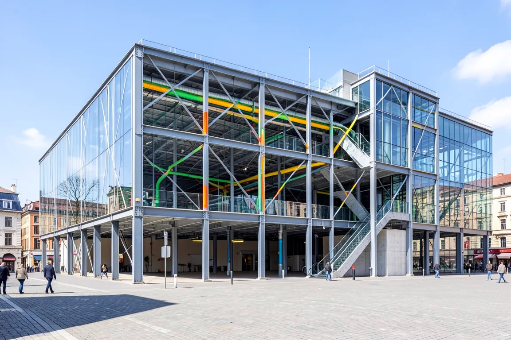

arkitektur · 1970s–1990s · også: Strukturell ekspresjonisme, Sen modernisme (teknologisk)
Et lett stålskjelett, med installasjoner, avstivning og heiser vist i farger på utsiden. Rogers, Piano og Foster gjorde 1920-årenes maskinestetikk til et fleksibelt bygg av løsdeler.

Kjerneidé
En bygning er en maskin av deler: konstruksjon, installasjoner og ferdsel er verktøy å se og å endre, og åpne etasjer lar bruken endre seg.
Designprinsipper
Frigjør etasjeplanet: spenn 12 til 48m med fagverk eller strekkstaver, slik at interiøret ikke har søyler i bruksområdet.
Legg installasjonene utenfor, på fasaden eller taket: kanaler, rør, heiser og trapper, farget etter funksjon (blått luft, grønt vann, gult strøm, rødt rømning).
Bygg av et sett prefabrikkerte deler: stålelementer, bolter, støpegods og glasspaneler som skrus, ikke sveises på byggeplassen.
Vis skjøtene: bolter, tapper, støpte gerberettes og strekkstaver er detaljene som bærer fasaden.
Kle skjelettet i en tynn hud av glass eller metallpanel, med vindusandel på 60 til 100 %.
Planlegg for endring: et regelmessig fag på 6 til 12m, et oppgulv på 150 til 600mm og vegger som kan flyttes.
Antimønstre
Installasjoner skjult i et himlingsrom og en kledd sjakt
Massive betong- eller murvegger
Påsatt historisk ornament eller sitat
Sveisede glatte skjøter som skjuler hvordan delen er festet